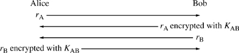
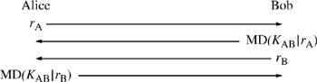
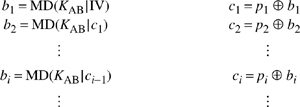
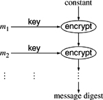
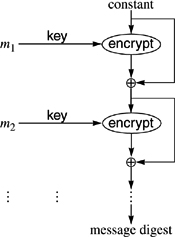

Networking Security Networking Security Networking Security Security Networking Security Networking Security Networking Charlie Kaufman Radia Perlman Mike Speciner Prentice Hall Network Security: Private Communication in a Public World, Second Edition Networking Security Networking Security Networking Security Security Networking Security Networking Security Networking Charlie Kaufman Radia Perlman Mike Speciner Prentice Hall Network Security: Private Communication in a Public World, Second Edition
5.2. Nifty Things to Do with a Hash
Before we look at the details of several popular hash algorithms, let's look at some interesting uses of hash algorithms. Surprisingly, if there is a shared secret, the hash algorithms can be used in all the ways that secret cryptography is used. It is a little confusing calling the schemes in the next few sections "message digest" schemes, since they do involve a shared secret. By our definition in §2.3 Types of Cryptographic Functions in which we said something that had a single shared secret was a secret key algorithm, these might be considered secret key algorithms. Never take definitions too seriously. The significant difference between a secret key algorithm and a message digest algorithm is that a secret key algorithm is designed to be reversible and a message digest algorithm is designed to be impossible to reverse. In this section we'll use MD as a "generic" message digest (cryptographic hash) algorithm.
|
Surprisingly, the drive for message digest algorithms started with public key cryptography. RSA was invented, which made possible digital signatures on messages, but computing a signature on a long message with RSA was sufficiently slow that RSA would not have been practical by itself. A cryptographically secure message digest function with high performance would make RSA much more useful. Instead of having to compute a signature over a whole long message, the message could be compressed into a small size by first performing a message digest and then computing the RSA signature on the digest. So MD and MD2 were created. MD was proprietary and never published. It was used in some of RSADSI's secure mail products. MD2 is documented in RFC 1319.
Then Ralph Merkle of Xerox developed a message digest algorithm called SNEFRU [MERK90] that was several times faster than MD2. This prodded Ron Rivest into developing MD4 (RFC 1320), a digest algorithm that took advantage of the fact that newer processors could do 32-bit operations, and was therefore able to be even faster than SNEFRU. Then SNEFRU was broken [BIHA92] (the cryptographic community considered it broken because someone was able to find two messages with the same SNEFRU digest). Independently, [DENB92] found weaknesses in a version of MD4 with two rounds instead of three. This did not officially break MD4, but it made Ron Rivest sufficiently nervous that he decided to strengthen it, and create MD5 (RFC 1321), which is a little slower than MD4. NIST subsequently proposed SHA, which is very similar to MD5, but even more strengthened, and also a little slower. Probably after discovering a never published flaw in the SHA proposal, NIST revised it at the twelfth hour in an effort to make it more secure, and called the revised version SHA-1 (see §5.6.3 SHA-1 Operation on a 512-bit Block). MD2 and MD4 were subsequently broken (in the sense that collisions were found), though they remain secure for most uses. At the time of this writing, NIST was working on a new hash function (probably to be named SHA-2) to increase the number of bits of output to 256 in order to have security comparable to the AES encryption algorithm.
Yes, Virginia, there was an MD3, but it was superseded by MD4 before it was ever published or used.
|
5.2.1. Authentication
In §2.4.4 Authentication we discussed how to use a secret key algorithm for authentication. A challenge is transmitted, and the other side has to encrypt the challenge with the shared key.

Imagine a world without secret key cryptography, but with cryptographic hash functions. So we can't use an algorithm like DES in the above example. This is not an entirely theoretical concern. Export controls may treat secret key algorithms more harshly than digest algorithms even if they are only used to compute MACs, especially when source code is provided. Could we use a message digest function in some way to accomplish the same thing? Bob and Alice will still need to share a secret. Message digest algorithms aren't reversible, so it can't work quite the same way. In the above example, in which secret key cryptography is used for authentication, Bob encrypts something, and Alice decrypts it to make sure Bob encrypted the quantity properly. A hash function will do pretty much the same thing. Alice still sends a challenge. Bob then concatenates the secret he shares with Alice with the challenge, takes a message digest of that, and transmits that message digest. Alice can't "decrypt" the result. However, she can do the same computation, and check that the result matches what Bob sends.

5.2.2. Computing a MAC with a Hash
In §4.3 Generating MACs we described how to compute a MAC (message authentication code) with a secret key algorithm. Again, let's assume that for some reason no secret key algorithms are available. Can we still compute a MAC, using a hash function instead of something like DES?
The obvious thought is that MD(m) is a MAC for message m. But it isn't. Anyone can compute MD(m). The point of the MAC is to send something that only someone knowing the secret can compute (and verify). For instance, if Alice and Bob share a secret, then Alice can send m, plus MAC, and since nobody except Alice and Bob can compute a MAC with their shared key, nobody but Alice or Bob would be able to send a message to Bob with an appropriate MAC. If we just simply used MD, then anyone can send any message m' together with MD(m'). So we do roughly the same trick for the MAC as we did for authentication. We concatenate a shared secret KAB with the message m, and use MD(KAB|m) as the MAC.
This scheme almost works, except for some idiosyncracies of most of the popular message digest algorithms, which would allow an attacker to be able to compute a MAC of a longer message beginning with m, given message m and the correct MAC for m.
Assume MD is one of MD4, MD5, or SHA-1. The way these algorithms work is that the message is padded to a multiple of 512 bits with a pad that includes the message length. The padded message is then digested from left to right in 512-bit chunks. In order to compute the message digest through chunk n, all that you need to know is the message digest through chunk n-1, plus the value of chunk n of the padded message.
Let's assume Carol would like to send a different message to Bob, and have it look like it came from Alice. Let's say that Carol doesn't care what's in the message. She only cares that the end of the message says P.S. Give Carol a promotion and triple her salary. Alice has transmitted some message m, and MD(KAB|m). Carol can see both of those quantities. She concatenates the padding and then whatever she likes to the end of m, and initializes the message digest computation with MD(KAB|m). She does not need to know the shared secret in order to compute the MAC.
How can we avoid this flaw? Lots of techniques have been proposed, all entirely effective as far as anyone can tell. But people came up with "improvements", each one a little more complex than the one before, with the apparent winner being HMAC. Some proposals with no known weaknesses are:
Put the secret at the end of the message instead of at the beginning. This will work. This method can be criticized for an extremely unlikely security flaw. The complaint is that if the MD algorithm were weak, and it was therefore possible to find two messages with the same digest, then those two messages would also have the same MAC. Use only half the bits of the message digest as the MAC. For instance, take the low-order 64 bits of the MD5 digest. This gives an attacker no information with which to continue the message digest (well, the attacker has a 1 in 264 chance of guessing the rest of the message digest correctlyÂwe assume you're not going to worry about that risk). Having only 64 bits of MAC (rather than using all 128 bits of the MD) is not any less secure, since there is no way that an attacker can generate messages and test the resulting MAC. Without knowing the secret, there is no way for the attacker to calculate the MAC. The best that can be done is to generate a random 64-bit MAC for the message you'd like to send and hope that you'll be really really lucky. Concatenate the secret to both the front and the back of the message. That way you get the collision resistance of putting it in front and the protection from appending that comes from putting it in back.
HMAC concatenates the secret to the front of the message, digests the combination, then concatenates the secret to the front of the digest, and digests the combination again. The actual construction is a little more complicated than this, and is described in section §5.7 HMAC. HMAC has lower performance than the other alternatives because it does a second digest. But the second digest is only computed over the secret and a digest, so it does not add much cost to large messages. In the worst case, if the message concatenated with the key fit into a single (512-bit) block, HMAC would be four times as expensive as one of the other alternatives described above. However, if many small messages are to be HMAC'd with the same key, it is possible to reuse the part of the computation that digests the key, so that HMAC would only be twice as slow. With a large enough message, HMAC's performance is only negligibly worse.
We call any hash combining the secret key and the data a keyed hash.
5.2.3. Encryption with a Message Digest
"Encryption with a message digest algorithm is easy!" you say. "But let me see you do decryption!" Message digest algorithms are not reversible, so the trick is to design a scheme in which both encryption and decryption run the message digest algorithm in the forward direction. The schemes we'll describe are reminiscent of the chaining methods for a secret key algorithm (see §4.2 Encrypting a Large Message).
5.2.3.1. Generating a One-Time Pad
Just as OFB (§4.2.3 Output Feedback Mode (OFB)) generates a pseudorandom bit stream which then encrypts a message by simply being ed with the message, we can use a message digest algorithm to generate a pseudorandom bit stream.
Again, Alice and Bob need a shared secret, KAB. Alice wants to send Bob a message. She computes MD(KAB). That gives the first block of the bit stream, b1. Then she computes MD(KAB|b1) and uses that as b2, and in general bi is MD(KAB|bi-1).
Alice and Bob can do this in advance, before the message is known. Then when Alice wishes to send the message, she s it with as much of the generated bit stream as necessary. Similarly, Bob decrypts the ciphertext by ing it with the bit stream he has calculated.
It is not secure to use the same bit stream twice, so, as with OFB, Alice starts with an IV. The first block is then MD(KAB|IV). She must transmit the IV to Bob. Alice can generate the bit stream in advance of encrypting the message, but Bob cannot generate the bit stream until he sees the IV.
5.2.3.2. Mixing In the Plaintext
One-time pad schemes have the problem that if you are able to guess the plaintext, you can the guessed text with the ciphertext, and then any message you like. This is not too much of a problem. We just need to recognize that a one-time pad scheme gives privacy only, and integrity must be gained through a scheme such as using a MAC.
However, in a scheme similar to CFB (§4.2.4 Cipher Feedback Mode (CFB)), we can mix the plaintext into the bit stream generation. For instance, break the message into MD-length chunks p1, p2,.... We'll call the ciphertext blocks c1, c2,.... And we'll need intermediate values b1, b2,... from which we'll compute each ciphertext block.

Decryption is straightforward. We leave it as Homework Problem 18.
5.2.4. Using Secret Key for a Hash
In case the previous sections make the secret key algorithms nervous about job security since they can be replaced by hash algorithms, we'll show that a hash algorithm can be replaced by a secret key algorithm. What we want to generate is a function with the properties of a hash algorithm. It should not require a secret. It should be publishable. It should be noninvertible.
5.2.4.1. UNIX Password Hash
UNIX uses a secret key algorithm to compute the hash of a password, which it then stores. It never has to reverse the hash to obtain a password. Instead, when the user types a password, UNIX uses the same algorithm to hash the typed quantity and compares the result with the stored quantity.
The hashing algorithm first converts the password into a secret key. This key is then used, with a DES-like algorithm, to encrypt the number 0. The method of turning a text string into a secret key is simply to pack the 7-bit ASCII associated with each of the first 8 characters of the password into a 56-bit quantity into which DES parity is inserted. (UNIX passwords can be longer than 8 characters, but the remaining octets are ignored.)
A 12-bit random number, known as salt, is stored with the hashed password. For an explanation of why salt is useful, see §10.3 Off-Line Password Guessing. A modified DES is used instead of standard DES to prevent hardware accelerators designed for DES from being used to reverse the password hash. The salt is used to modify the DES data expansion algorithm. The value of the salt determines which bits are duplicated when expanding R from 32 to 48 bits (see §3.3.5 The Mangler Function).
To summarize, each time a password is set, a 12-bit number is generated. The password is converted into a secret key. The 12-bit number is used to define a modified DES algorithm. The modified DES algorithm is used with the secret key as input to encrypt the constant 0. The result is stored along with the 12-bit number as the user's hashed password.
5.2.4.2. Hashing Large Messages
The UNIX password hash is a method of doing a message digest of a very short message (maximum length is the length of the secret key). Here's a method of converting a secret key algorithm into a message digest algorithm for arbitrary messages (see Figure 5-1).

A secret key algorithm has a key length, say k bits. It has a message block length, say b bits. In the case of DES, k = 56 and b = 64. In the case of IDEA, k = 128 and b = 64.
Divide the message into k-bit chunks m1, m2,.... Use the first block of the message as a key to encrypt a constant. The result is a b-bit quantity. Use the second k-bit chunk of the message to encrypt the b-bit quantity to get a new b-bit quantity. Keep doing this until you run out of k-bit blocks of the message. Use the final b-bit result as the message digest.
There's a serious problem with this, which is that the typical message block length b is 64 bits, which is too short to use as a message digest. To obtain two messages with the same message digest using this technique (and remembering the birthday problem), we'd only have to try about 232 messages before finding two that had the same digest. And furthermore, if we want to find a message with a particular message digest, a technique similar to the one in §4.4.1.2 Encrypting Twice with Two Keys could find a message with a particular 64-bit message digest in about 233 iterations.
A technique that works better (and in particular makes it a workfactor of 263 to find a message matching a given hash) is to the input to each round with the output as shown below:

One possible technique for generating 128 bits of message digest is to generate two 64-bit quantities using techniques that are similar to compute but designed to produce different values. The first 64-bit quantity might be generated as we just describedÂthe message is broken into key-length chunks b1,b2,... and the chunks are used for encryption in that order. The second 64-bit quantity is generated by using the chunks in reverse order.
That technique has a flaw (see Homework Problem 4), and it's a little inconvenient to do two passes on the message. A better alternative is to process the message twice in the forward direction, and just start with two different constants.
|